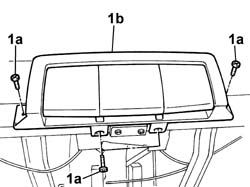
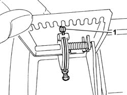
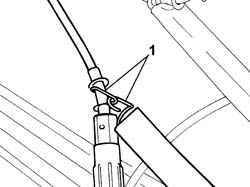
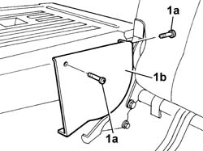
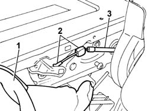

7050A74 Rear seat BACKREST locking/release CABLE - R.R.
- Path
- Procedures > 70 FITTINGS > 7050 REAR SEATS > 7050A rear seat assembly > 7050A74 Rear seat BACKREST locking/release CABLE - R.R.
- Kind
- repair procedure (removal / refitting; the operation number is the code)
- Applies to
- all engines; all production periods
- Interactive page
- https://sloeber94.github.io/elrnDB-fPnd/en/#/2753279
Applies to: all engines; all production periods
 Removing
Removing
 Refitting
Refitting7050C05 Single sliding REAR SEAT with split folding squab - R.R .
7050C11 Single CUSHION of sliding rear seat - S.R.
1. Undo the bolts (1a) fixing the movement handles (1b).

Applies to: all engines; all production periods
1. Lift up the folding control handle and disconnect the cable from the actual handle.

Applies to: all engines; all production periods
1. Disconnect the return spring from the folding locking/release cable.

Applies to: all engines; all production periods
Working on the folding control from the luggage compartment, fold the backrest over.
1. Undo the fixing bolts (1a) and remove the centre joint cover (1b) for one of the split backrests.

Applies to: all engines; all production periods
1. Partly lift up the folding backrest cover and upholstery until access can be gained to the folding locking/release cable.
2. Disconnect the backrest cable at the points shown.
3. Release the backrest folding locking/release cable and remove it.

Applies to: all engines; all production periods
Refitting
RemovingFit the backrest folding locking/release cable.
Connect the folding locking/release cable to the backrest.
Place the folding backrest cover and upholstery back in its original position.
Fit the centre joint cover for the split backrest and tighten the fixing bolts.
Connect the return spring to the folding locking/release cable.
Lift up the folding control handle and connect the cable to the actual handle.
Position the seat moving control handles in the housing on the cushion frame and tighten the fixing bolts.
Check the operation of the folding device.
7050C11 Single CUSHION of sliding rear seat - S.R.
7050C05 Single sliding REAR SEAT with split folding squab - R.R .